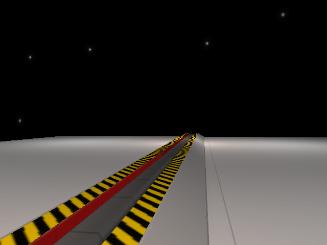

Track is called "Eternal Ambient" by Ambient Music. (A YouTuber)
Atmos Engine
Atmos is the name of a first person homebrew engine for the original Xbox. Writen in C++ using DirectX 8.
It is a retro engine for fans of the console and are one of my hobbies. It's name comes from the word "Atmosphere" which will be a major theme for the games which will be produced from this engine. (Unless someone wants something else)
Atmos will have what is available for the first Xbox. Textured maps with lightmapping support, 3D models, face texture management and more. There's gonna be a facial system which bestows of texture swapping which will be used instead of the usual shapes key method.
What I want to implement is LOD and frustum/occlusion culling. But I'm also gonna add a visibility group system to hide certain meshes when triggered. currently collision is the highest priority for the engine.

There's specific games that I wanted to make from this. I'm not gonna spoil it now but I got ideas from certain sources. One of them is this.